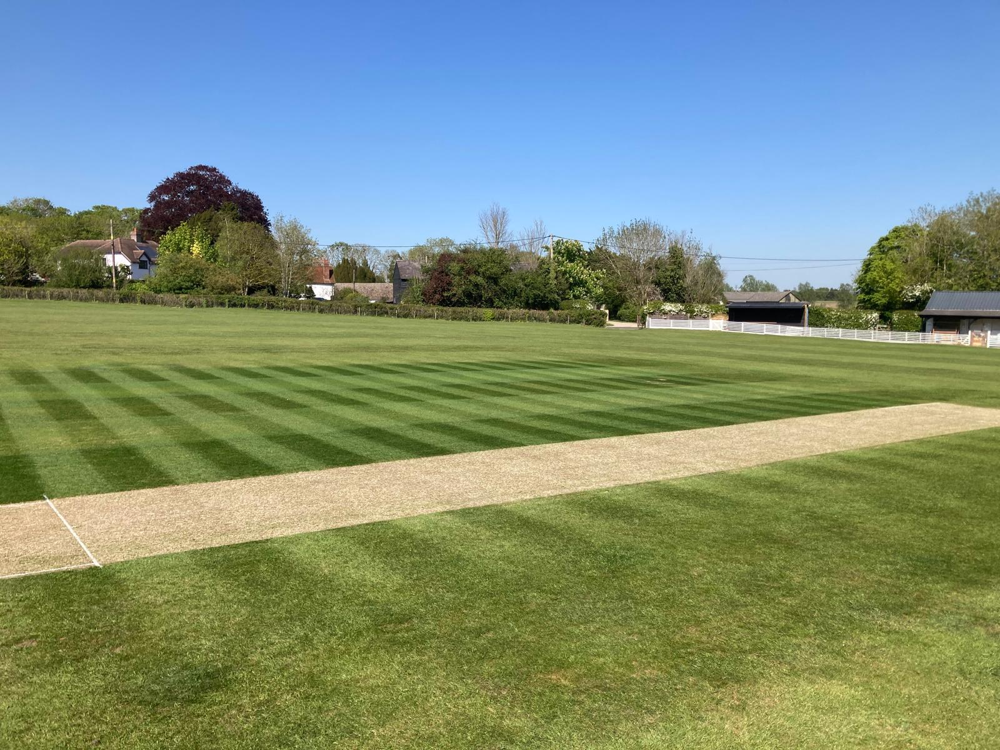

Friendly cricket, village character and a strong social side in rural Essex.
Lindsell Cricket Club is a friendly village club in rural Essex, based at our ground in Churchend. We play competitive friendly cricket, host visiting sides and put just as much value on the social side of the club as we do on the score.
The club is built around the people who keep it going — players, families, friends, supporters and visitors. Match days are relaxed, welcoming and sociable, with the aim of playing good cricket and enjoying the day together.

Lindsell is about more than the final score: friendly fixtures, social days, touring sides and a close-knit club atmosphere.

A varied programme of friendly cricket, with fixtures against local clubs, touring sides and invitation teams.

Players, families, friends and visitors are all part of the atmosphere that makes a day at Lindsell what it is.

Club events and social days are a big part of the season, and often just as memorable as the cricket itself.

Our ground is on Gallows Green Road in Churchend, Lindsell. If you're visiting for a fixture, coming to watch, or simply finding the club for the first time, the Contact page has a map, directions and our what3words location.